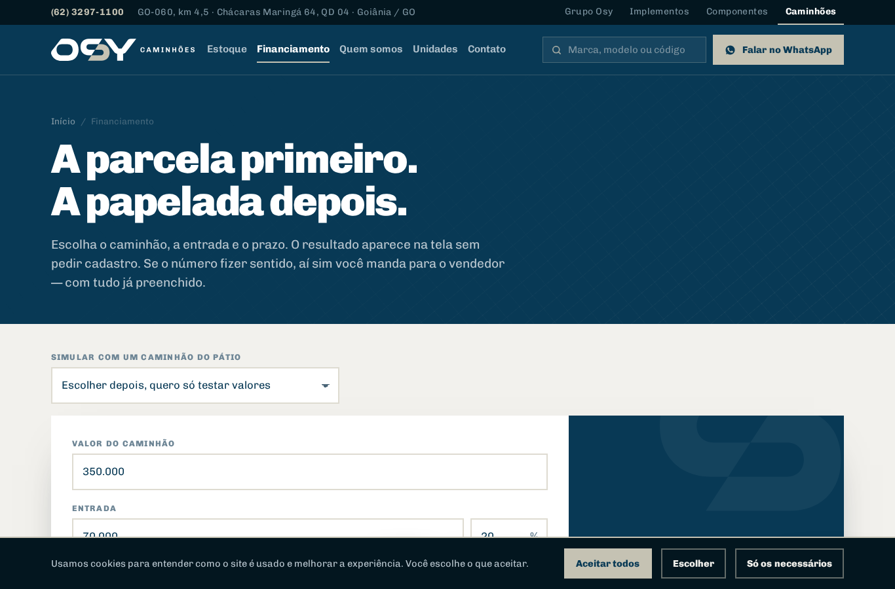
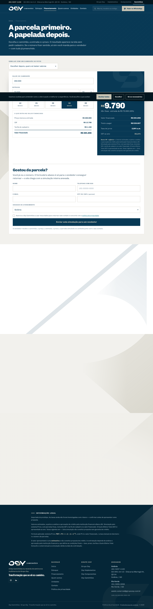

Sistema de Investigação de Marca e Identidade Online
https://www.osycaminhoes.com.br/financiamento
Prioridade: MEDIUM · Cenário: B_AMBIGUOUS_COMMUNICATION · Revisão humana: PENDING
A página pertence a uma revenda de caminhões (alvo de escopo) que oferece financiamento com menção explícita de credenciamento ao Banco BV. Não há personificação institucional nem uso abusivo de logotipos do banco, predominando a identidade da própria loja. No entanto, o estabelecimento não cumpre os requisitos formais de transparência da Resolução CMN nº 4.935/2021 (ausência de declaração expressa de correspondente e ouvidoria) e exibe CNPJ placeholder ('00.000.000/0001-00'), caracterizando comunicação ambígua com necessidade de revisão. [Revisor: CONFIRM] A entidade analisada é uma revenda de veículos pesados (caminhões), enquadrando-se no escopo prioritário de monitoramento de COBANs e lojistas parceiros. A página oferece simulação de financiamento alegando credenciamento formal junto ao Banco BV (E-TXT-006, E-TXT-002). Não se verifica overbranding ou tentativa de se passar pela instituição bancária, mantendo a identidade visual própria da Osy Caminhões (E-SHOT-FULL, E-HDR). Todavia, há omissão dos requisitos obrigatórios de transparência previstos na Res. CMN nº 4.935/2021 (falta de declaração expressa da condição de correspondente bancário e canal de ouvidoria), além da presença de CNPJ genérico de marcação (E-FTR) e aviso sobre taxas não homologadas (E-TXT-013), sustentando plenamente a classificação REVIEW_REQUIRED com prioridade MEDIUM.


| Ref | Tipo | Local | Conteúdo |
|---|---|---|---|
| E-URL | domain | url | URL final: https://www.osycaminhoes.com.br/financiamento (domínio: www.osycaminhoes.com.br) |
| E-DISC-001 | text | search_index | Índice de busca (grounding): osycaminhoes.com.br — **URL:** `https://osycaminhoes.com.br` | **Tipo:** Revenda de Veículos Pesados / Caminhões |
| E-SHOT-VIEWPORT | screenshot | viewport | evidence/C3c5e0b5ec9/attempt-1/viewport.png (sha256 be395b6152e0067c…) |
| E-SHOT-FULL | screenshot | page | evidence/C3c5e0b5ec9/attempt-1/fullpage.png (sha256 40da5a7c73068f52…) |
| E-TITLE | title | head | Simulador de financiamento de caminhão | Osy Caminhões |
| E-META-1 | meta | head | description: Calcule a parcela do seu caminhão antes de vir à loja. Escolha entrada e prazo, veja o CET e mande a simulação pronta para o vendedor. |
| E-HEAD-1 | heading | page | A parcela primeiro. A papelada depois. |
| E-HEAD-2 | heading | page | Gostou da parcela? |
| E-HEAD-3 | heading | page | Do site até a chave na mão |
| E-HEAD-4 | heading | page | Você simula no site |
| E-HEAD-5 | heading | page | Manda a simulação para o vendedor |
| E-HEAD-6 | heading | page | A gente monta a proposta |
| E-HEAD-7 | heading | page | Aprovado, você retira |
| E-HEAD-8 | heading | page | Documentos exigidos |
| E-HEAD-9 | heading | page | Pessoa física |
| E-HEAD-10 | heading | page | Pessoa jurídica |
| E-HEAD-11 | heading | page | O que todo mundo pergunta |
| E-HDR | text | header | Estoque Financiamento Quem somos Unidades Contato Falar no WhatsApp |
| E-FOLD | text | viewport (acima da dobra) | (62) 3297-1100 GO-060, km 4,5 · Chácaras Maringá 64, QD 04 · Goiânia / GO Grupo Osy Implementos Componentes Caminhões Estoque Financiamento Quem somos Unidades Contato Falar no WhatsApp Início / Financiamento A parcela primeiro. A papelada depois. Escolha o caminhão, a entrada e o prazo. O resultado aparece na tela sem pedir cadastro. Se o número fizer sentido, aí sim você manda para o vendedor — com tudo já preenchido. Simular com um caminhão do pátio Valor do caminhão Entrada Prazo 12 24 36 48 60 Parcela estimada ✕ Buscar Início Estoque Todos os caminhões disponíveis Financiamento Simule a parcela antes de vir Quem somos 24 anos e o ecossistema Unidades Goiânia e Rio Verde Contato Fale com o comercial Falar no WhatsApp (62) 3297-1100 GO-060, km 4,5 · Chácaras Maringá 64, QD 04 Goiânia / GO Implementos Componentes Caminhões Grupo Osy Falar agora Usamos cookies para entender como o site é usado e melhorar a experiência. Você escolhe o que aceitar. Aceitar todos Escolher Só os necessários |
| E-FTR | text | footer | A Osy Caminhões é a revenda de seminovos multimarca do Grupo Osy. Transformação que se vê no caminho. NAVEGAR Início Estoque Financiamento Quem somos Unidades Contato Política de privacidade GRUPO OSY Grupo Osy Osy Implementos Osy Componentes Osy Caminhões UNIDADES Goiânia (62) 3297-1100 GO-060, km 4,5 · Chácaras Maringá 64, QD 04 Goiânia / GO Rio Verde (64) 3055-3058 Rio Verde / GO assist.comercial@grupoosy.com.br CNPJ 00.000.000/0001-00 Osy Caminhões · Grupo Osy · Transformação que se vê no caminho. Política de privacidade · Preferências de cookies · © 2026 |
| E-NAV | nav | header | Osy Caminhões, início <https://www.osycaminhoes.com.br/index.html> | Estoque <https://www.osycaminhoes.com.br/seminovos.html> | Financiamento <https://www.osycaminhoes.com.br/financiamento.html> | Quem somos <https://www.osycaminhoes.com.br/quem-somos.html> | Unidades <https://www.osycaminhoes.com.br/unidades.html> | Contato <https://www.osycaminhoes.com.br/contato.html> | Falar no WhatsApp <https://wa.me/5562991089295?text=Ol%C3%A1!%20Vim%20pelo%20site%20da%20Osy%20Caminh%C3%B5es%20e%20quero%20falar%20com%20um%20vendedor.> | Início <https://www.osycaminhoes.com.br/index.html> | Início <https://www.osycaminhoes.com.br/index.html> | Estoque Todos os caminhões disponíveis <https://www.osycaminhoes.com.br/seminovos.html> | Financiamento Simule a parcela antes de vir <https://www.osycaminhoes.com.br/financiamento.html> | Quem somos 24 anos e o ecossistema <https://www.osycaminhoes.com.br/quem-somos.html> | Unidades Goiânia e Rio Verde <https://www.osycaminhoes.com.br/unidades.html> | Contato Fale com o comercial <https://www.osycaminhoes.com.br/contato.html> |
| E-CTA-1 | cta | header | Buscar |
| E-CTA-2 | cta | header | Falar no WhatsApp <https://wa.me/5562991089295?text=Ol%C3%A1!%20Vim%20pelo%20site%20da%20Osy%20Caminh%C3%B5es%20e%20quero%20falar%20com%20um%20vendedor.> |
| E-CTA-3 | cta | page | 12 MESES |
| E-CTA-4 | cta | page | 24 MESES |
| E-CTA-5 | cta | page | 36 MESES |
| E-CTA-6 | cta | page | 48 MESES |
| E-CTA-7 | cta | page | 60 MESES |
| E-CTA-8 | cta | page | Enviar esta simulação para um vendedor |
| E-CTA-9 | cta | page | ✕ |
| E-CTA-10 | cta | page | Buscar |
| E-CTA-11 | cta | page | Falar no WhatsApp <https://wa.me/5562991089295?text=Ol%C3%A1!%20Vim%20pelo%20site%20da%20Osy%20Caminh%C3%B5es.> |
| E-CTA-12 | cta | page | Abrir menu |
| E-CTA-13 | cta | footer | Preferências de cookies |
| E-CTA-14 | cta | page | Aceitar todos |
| E-CTA-15 | cta | page | Escolher |
| E-CTA-16 | cta | page | Só os necessários |
| E-CONTACT-1 | contact | page | (62) 3297-1100 <tel:+556232971100> |
| E-CONTACT-2 | contact | header | Instagram da Osy Caminhões <https://www.instagram.com/osycaminhoesoficial/> |
| E-CONTACT-3 | contact | header | Falar no WhatsApp <https://wa.me/5562991089295?text=Ol%C3%A1!%20Vim%20pelo%20site%20da%20Osy%20Caminh%C3%B5es%20e%20quero%20falar%20com%20um%20vendedor.> |
| E-CONTACT-4 | contact | page | Falar no WhatsApp <https://wa.me/5562991089295?text=Ol%C3%A1!%20Vim%20pelo%20site%20da%20Osy%20Caminh%C3%B5es.> |
| E-CONTACT-5 | contact | page | (62) 3297-1100 <tel:+556232971100> |
| E-CONTACT-6 | contact | page | Falar no WhatsApp <https://wa.me/5562991089295?text=Ol%C3%A1!%20Vim%20pelo%20site%20da%20Osy%20Caminh%C3%B5es.> |
| E-CONTACT-7 | contact | page | Falar agora <https://wa.me/5562991089295?text=Ol%C3%A1!%20Vim%20pelo%20site%20da%20Osy%20Caminh%C3%B5es.> |
| E-CONTACT-8 | contact | footer | Instagram <https://www.instagram.com/osycaminhoesoficial/> |
| E-CONTACT-9 | contact | footer | (62) 3297-1100 <tel:+556232971100> |
| E-CONTACT-10 | contact | footer | (64) 3055-3058 <tel:+556430553058> |
| E-CONTACT-11 | contact | footer | assist.comercial@grupoosy.com.br <mailto:assist.comercial@grupoosy.com.br> |
| E-TXT-001 | text | page | Falar no WhatsApp |
| E-TXT-002 | text | page | Banco BV · vigência —. Valores estimados, sujeitos a análise e aprovação de crédito pela instituição financeira Banco BV. Simulação pelo sistema Price, com parcelas fixas, incluindo IOF e tarifa de cadastro no valor financiado. O Custo Efetivo Total (CET) é apresentado ao ano. Taxas vigentes em —. Esta simulação não constitui proposta nem garantia de crédito. |
| E-TXT-003 | text | page | TELEFONE COM DDD |
| E-TXT-004 | text | page | CPF OU CNPJ (opcional) |
| E-TXT-005 | text | page | UNIDADE DE ATENDIMENTO |
| E-TXT-006 | text | page | A Osy é credenciada ao Banco BV. A proposta é montada aqui dentro: você não percorre banco por banco. |
| E-TXT-007 | text | page | Nome, telefone e e-mail. O vendedor da unidade do caminhão recebe tudo junto: veículo, entrada, prazo e parcela. |
| E-TXT-008 | text | page | Com os seus documentos em mãos, a proposta vai para análise da instituição financeira. |
| E-TXT-009 | text | page | Comprovante de endereço dos últimos três meses |
| E-TXT-010 | text | page | Cartão CNPJ |
| E-TXT-011 | text | page | Comprovante de endereço da empresa |
| E-TXT-012 | text | page | Não. É uma estimativa calculada pelo sistema Price, com parcelas fixas. A aprovação depende de análise de crédito da instituição financeira, feita com os seus documentos. O valor final pode mudar. |
| E-TXT-013 | text | page | Importado do protótipo. As taxas ainda não foram homologadas com o banco — confirmar antes de apresentar como proposta. |
| E-TXT-014 | text | page | Valores estimados, sujeitos a análise e aprovação de crédito pela instituição financeira Banco BV. Simulação pelo sistema Price, com parcelas fixas, incluindo IOF e tarifa de cadastro no valor financiado. O Custo Efetivo Total (CET) é apresentado ao ano. Taxas vigentes em —. Esta simulação não constitui proposta nem garantia de crédito. |
| E-TXT-015 | text | page | O valor apresentado é uma estimativa e não constitui proposta de crédito. A contratação depende de análise e aprovação pela instituição financeira, que define as condições finais — taxa, prazo, tarifas e Custo Efetivo Total. Consulte o comercial para a simulação válida na data da contratação. |
| E-TXT-016 | text | page | Falar no WhatsApp |
| E-TXT-017 | text | page | CNPJ 00.000.000/0001-00 |
| Dimensão | Sinal | Achado | Refs |
|---|---|---|---|
| VISUAL_IDENTITY | LEGITIMATE | Identidade visual própria da Osy Caminhões / Grupo Osy predominante em todo o layout, sem apropriação indevida do logotipo ou cores institucionais do Banco BV. | E-SHOT-VIEWPORT E-SHOT-FULL |
| DECLARED_COMMERCIAL_IDENTITY | CONFUSION | Apesar de identificar a marca comercial Osy Caminhões e endereços físicos em Goiás, o CNPJ informado no rodapé é um placeholder ('00.000.000/0001-00'). | E-FTR E-TXT-017 |
| CORRESPONDENT_TRANSPARENCY | CONFUSION | Afirma credenciamento com o Banco BV para montagem de propostas de financiamento, mas omite a qualificação formal de correspondente bancário e os dados da ouvidoria da instituição. | E-TXT-006 E-FTR |
| INSTITUTIONAL_LANGUAGE | NEUTRAL | Apresenta simulação com aviso legal de que se trata de estimativa sujeita à aprovação de crédito pela instituição financeira. | E-TXT-002 E-TXT-014 E-TXT-015 |
| LOGO_USAGE | LEGITIMATE | Nenhum logotipo oficial ou legado do Banco BV foi incorporado de forma ostensiva; as menções ocorrem apenas em texto explicativo da simulação. | E-SHOT-VIEWPORT E-SHOT-FULL E-TXT-002 |
| SERVICE_JOURNEY | NEUTRAL | A jornada consiste em simulação prévia da parcela para posterior contato comercial via vendedor da loja. | E-HEAD-1 E-CTA-8 E-TXT-007 |
| CONTACT_CHANNELS | LEGITIMATE | Canais de contato próprios da revenda (telefones de Goiânia e Rio Verde, e-mail do Grupo Osy e WhatsApp comercial). | E-CONTACT-1 E-CONTACT-3 E-CONTACT-11 E-FTR |
| CONSUMER_CONFUSION | NEUTRAL | O consumidor não é induzido a crer que está no site oficial do Banco BV, mas pode ter incerteza sobre a formalidade do vínculo de correspondência. | E-SHOT-VIEWPORT E-TXT-006 |
A página pertence a uma revenda de caminhões (alvo de escopo) que oferece financiamento com menção explícita de credenciamento ao Banco BV. Não há personificação institucional nem uso abusivo de logotipos do banco, predominando a identidade da própria loja. No entanto, o estabelecimento não cumpre os requisitos formais de transparência da Resolução CMN nº 4.935/2021 (ausência de declaração expressa de correspondente e ouvidoria) e exibe CNPJ placeholder ('00.000.000/0001-00'), caracterizando comunicação ambígua com necessidade de revisão.
Nenhum CNPJ ou razão social identificáveis no conteúdo coletado.
| Tipo | Valor | Ref | Contexto |
|---|---|---|---|
| domain | osycaminhoes.com.br | E-URL | |
| cnpj | 00.000.000/0001-00 (dígito inválido) | E-FTR | · Chácaras Maringá 64, QD 04 Goiânia / GO Rio Verde (64) 3055-3058 Rio Verde / GO assist.comercial@grupoosy.com.br CNPJ 00.000.000/0001-00 |
| assist.comercial@grupoosy.com.br | E-FTR | ||
| social_profile | https://www.instagram.com/osycaminhoesoficial/ | E-CONTACT-2 | |
| phone | (62) 3297-1100 | E-FOLD | |
| phone | (64) 3055-3058 | E-FTR | |
| Falar no WhatsApp <https://wa.me/5562991089295?text=Ol%C3%A1!%20Vim%20pelo%20site%20da%20Osy%20Caminh%C3%B5es%20e%20quero%20falar%20com%20um%20vendedor.> | E-CONTACT-3 | ||
| Falar no WhatsApp <https://wa.me/5562991089295?text=Ol%C3%A1!%20Vim%20pelo%20site%20da%20Osy%20Caminh%C3%B5es.> | E-CONTACT-4 | ||
| Falar agora <https://wa.me/5562991089295?text=Ol%C3%A1!%20Vim%20pelo%20site%20da%20Osy%20Caminh%C3%B5es.> | E-CONTACT-7 | ||
| partnership_declaration | credenciada | E-TXT-006 | A Osy é credenciada ao Banco BV. |
Mapeamento indicativo para apoio à auditoria. Não constitui conclusão regulatória; a decisão definitiva pertence à auditoria.
Fonte: NORMATIVE
Art. 14. O contrato de correspondente deve estabelecer: [...] II - vedação à utilização, pelo contratado, de logomarca ou de outros atributos que sejam similares aos adotados pela instituição contratante em suas agências, postos de atendimento, sítio eletrônico na internet, aplicativo ou outras plataformas de comunicação em rede;
Evidência observada: E-SHOT-FULL E-SHOT-VIEWPORT E-TXT-002
Fonte: NORMATIVE
Art. 14. O contrato de correspondente deve estabelecer: [...] III - divulgação ao público, pelo contratado, de sua condição de prestador de serviços à instituição contratante, identificada pelo nome com que é conhecida no mercado, com descrição dos produtos e serviços oferecidos e canais de contato da instituição contratante, inclusive de sua ouvidoria, em local visível, em destaque e em formato legível, por meio de: a) sítio eletrônico do correspondente na internet, acessível na página inicial; b) aplicativo e outras plataformas de comunicação em rede do correspondente; [...]
Hipótese: Divulgação ao público da condição de prestador de serviços/parceria ausente, insuficiente, ambígua ou sem destaque. A norma disciplina correspondentes contratados; o responsável não foi identificado como correspondente.
Evidência observada: E-FTR E-TXT-002 E-TXT-006 E-TXT-014 E-TXT-017
Informação faltante:
Fonte: NORMATIVE
Art. 3º O correspondente atua por conta e sob as diretrizes da instituição contratante, que assume inteira responsabilidade pelo atendimento prestado aos clientes e usuários por meio do contratado.
Evidência observada: E-CONTACT-1 E-CONTACT-11 E-CONTACT-3 E-FTR
Se o responsável não for correspondente contratado, os indícios podem caracterizar uso indevido de marca ou fraude, fora do escopo da Res. 4.935: avaliar encaminhamento às áreas jurídica/segurança.
Limitações: requisitos contratuais/internos não fornecidos: mapeamento limitado ao texto normativo
Decisão: CONFIRM → REVIEW_REQUIRED / MEDIUM
A entidade analisada é uma revenda de veículos pesados (caminhões), enquadrando-se no escopo prioritário de monitoramento de COBANs e lojistas parceiros. A página oferece simulação de financiamento alegando credenciamento formal junto ao Banco BV (E-TXT-006, E-TXT-002). Não se verifica overbranding ou tentativa de se passar pela instituição bancária, mantendo a identidade visual própria da Osy Caminhões (E-SHOT-FULL, E-HDR). Todavia, há omissão dos requisitos obrigatórios de transparência previstos na Res. CMN nº 4.935/2021 (falta de declaração expressa da condição de correspondente bancário e canal de ouvidoria), além da presença de CNPJ genérico de marcação (E-FTR) e aviso sobre taxas não homologadas (E-TXT-013), sustentando plenamente a classificação REVIEW_REQUIRED com prioridade MEDIUM.
| Tema | Severidade | Questionamento | Refs |
|---|---|---|---|
| domain_attribution | MEDIUM | Responsável pela página não identificado; a conclusão sobre a marca não pode ser atribuída a um estabelecimento específico. | E-URL |
| Fonte | Consulta / hipótese | URL original | Título / trecho |
|---|---|---|---|
| grounding | Objetivo: Lojas, revendas e correspondentes da região Centro-Oeste que divulgam financiamento da marca.
Execute no Google Search as seguintes consultas (dorks):
- "bv financeira" "bancos parceiros" veículos "Distrito Federal" -site:bv.com.br -site:bancobv.com.br -site:bvfinanceira.com.br -site:bvinvestimentos.com.br -site:napista.com.br -site:bvopen.com.br -site:meufinanciamentosolar.com.br -site:votorantim.com.br -site:vam.com.br -site:reclameaqui.com.br -site:jusbrasil.com.br -site:jus.br
- ("Banco BV" OR "bv financeira") financiamento (loja OR revenda OR correspondente OR promotora) "Distrito Federal" -site:bv.com.br -site:bancobv.com.br -site:bvfinanceira.com.br -site:bvinvestimentos.com.br -site:napista.com.br -site:bvopen.com.br -site:meufinanciamentosolar.com.br -site:votorantim.com.br -site:vam.com.br -site:reclameaqui.com.br -site:jusbrasil.com.br -site:jus.br
- "bv financeira" "bancos parceiros" veículos "Goiás" -site:bv.com.br -site:bancobv.com.br -site:bvfinanceira.com.br -site:bvinvestimentos.com.br -site:napista.com.br -site:bvopen.com.br -site:meufinanciamentosolar.com.br -site:votorantim.com.br -site:vam.com.br -site:reclameaqui.com.br -site:jusbrasil.com.br -site:jus.br
- ("Banco BV" OR "bv financeira") financiamento (loja OR revenda OR correspondente OR promotora) "Goiás" -site:bv.com.br -site:bancobv.com.br -site:bvfinanceira.com.br -site:bvinvestimentos.com.br -site:napista.com.br -site:bvopen.com.br -site:meufinanciamentosolar.com.br -site:votorantim.com.br -site:vam.com.br -site:reclameaqui.com.br -site:jusbrasil.com.br -site:jus.br
- "bv financeira" "bancos parceiros" veículos "Mato Grosso" -site:bv.com.br -site:bancobv.com.br -site:bvfinanceira.com.br -site:bvinvestimentos.com.br -site:napista.com.br -site:bvopen.com.br -site:meufinanciamentosolar.com.br -site:votorantim.com.br -site:vam.com.br -site:reclameaqui.com.br -site:jusbrasil.com.br -site:jus.br
- ("Banco BV" OR "bv financeira") financiamento (loja OR revenda OR correspondente OR promotora) "Mato Grosso" -site:bv.com.br -site:bancobv.com.br -site:bvfinanceira.com.br -site:bvinvestimentos.com.br -site:napista.com.br -site:bvopen.com.br -site:meufinanciamentosolar.com.br -site:votorantim.com.br -site:vam.com.br -site:reclameaqui.com.br -site:jusbrasil.com.br -site:jus.br
- "bv financeira" "bancos parceiros" veículos "Mato Grosso do Sul" -site:bv.com.br -site:bancobv.com.br -site:bvfinanceira.com.br -site:bvinvestimentos.com.br -site:napista.com.br -site:bvopen.com.br -site:meufinanciamentosolar.com.br -site:votorantim.com.br -site:vam.com.br -site:reclameaqui.com.br -site:jusbrasil.com.br -site:jus.br
- ("Banco BV" OR "bv financeira") financiamento (loja OR revenda OR correspondente OR promotora) "Mato Grosso do Sul" -site:bv.com.br -site:bancobv.com.br -site:bvfinanceira.com.br -site:bvinvestimentos.com.br -site:napista.com.br -site:bvopen.com.br -site:meufinanciamentosolar.com.br -site:votorantim.com.br -site:vam.com.br -site:reclameaqui.com.br -site:jusbrasil.com.br -site:jus.br
Liste de forma abrangente as páginas públicas encontradas (até 12 resultados distintos), informando para cada uma o nome do estabelecimento/perfil, a URL e como a marca é utilizada (destaque visual, título, feirão, simulador, redes sociais e se há ou não identificação clara de CNPJ e condição de correspondente bancário). H5-establishment:regiao-Centro-Oeste | https://www.osycaminhoes.com.br/financiamento | osycaminhoes.com.br **URL:** `https://osycaminhoes.com.br` | **Tipo:** Revenda de Veículos Pesados / Caminhões |
Original: https://www.osycaminhoes.com.br/financiamento
Final: https://www.osycaminhoes.com.br/financiamento
| Artefato | Caminho | SHA-256 | Bytes |
|---|---|---|---|
| screenshot_viewport | evidence/C3c5e0b5ec9/attempt-1/viewport.png | be395b6152e0067c35d48dfaf48de424c04573b23518b1417f4fbeb21f78ba32 | 169198 |
| screenshot_full | evidence/C3c5e0b5ec9/attempt-1/fullpage.png | 40da5a7c73068f5287a1b688e265714bb30f5745d77151012476b1e84348f3e1 | 670770 |
| html | evidence/C3c5e0b5ec9/attempt-1/page.html.txt | 023662c1037a552539f91745c4696ec84dc8db71d793305ddcc99acb2e17c61d | 33572 |
| text | evidence/C3c5e0b5ec9/attempt-1/text.txt | 5bc3d3c6eafe2ab4c7c5c543ca510390edc387525495e23fa38037b8f5a33c4d | 5453 |
| page_data | evidence/C3c5e0b5ec9/attempt-1/page.json | ee57c575b3ba62df6398c727a8308dc5c3633c75d0d09a81bb94d10dc2d37307 | 21371 |
| Quando | De | Para | Nota |
|---|---|---|---|
| 2026-11-25T18:12:13+00:00 | DISCOVERED | QUEUED | prioritised (score 0.0) |
| 2026-11-25T19:40:52+00:00 | QUEUED | COLLECTING | |
| 2026-11-25T19:40:57+00:00 | COLLECTING | COLLECTED | |
| 2026-11-25T19:40:57+00:00 | COLLECTED | ANALYZING | |
| 2026-11-25T19:41:14+00:00 | ANALYZING | REVIEWING | |
| 2026-11-25T19:41:26+00:00 | REVIEWING | COMPLETED |